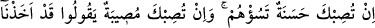

TEBÜK GAZVESİ’NDE
MÜNÂFIKLARIN DURUMU
50. Sana bir iyilik ulaşsa (bu), onları üzer ve eğer sana bir kötülük ulaşsa
sevinerek, “Biz önceden (sefere katılmamakla) tedbir almışız derler ve
döner(gider)ler.
51. De ki: “Allah bizim için ne yazmış ise ancak o bize ulaşır, bizim mevlâmız
O’dur. Müminler sâdece Allah’a tevekkül etsinler.”
52. De ki: “Siz bizim hakkımızda ancak iki iyilikten birisini beklemiyor musunuz?
Ama biz, Allah’ın size ya kendi tarafından veya bizim ellerimizle bir azab
ulaştırmasını bekliyoruz. Haydi bekleyin, biz de sizinle beraber beklemekteyiz.”
53. De ki: “İster gönüllü ister gönülsüz olarak Allah yolunda harcayın, sizden
kabul edilmeyecektir. Çünkü siz, yoldan çıkan bir kavimsiniz!”
54. Harcamalarının kabul edilmesine engel olan sadece şudur: Onlar, Allah’ı ve
Rasûlü’nü inkâr ettiler. Namaza da üşene üşene gelirler ve Allah yolunda istemeye
istemeye harcarlar.
55. Onların ne malları ne de evlatları seni imrendirmesin. Allah, bunlarla onlara